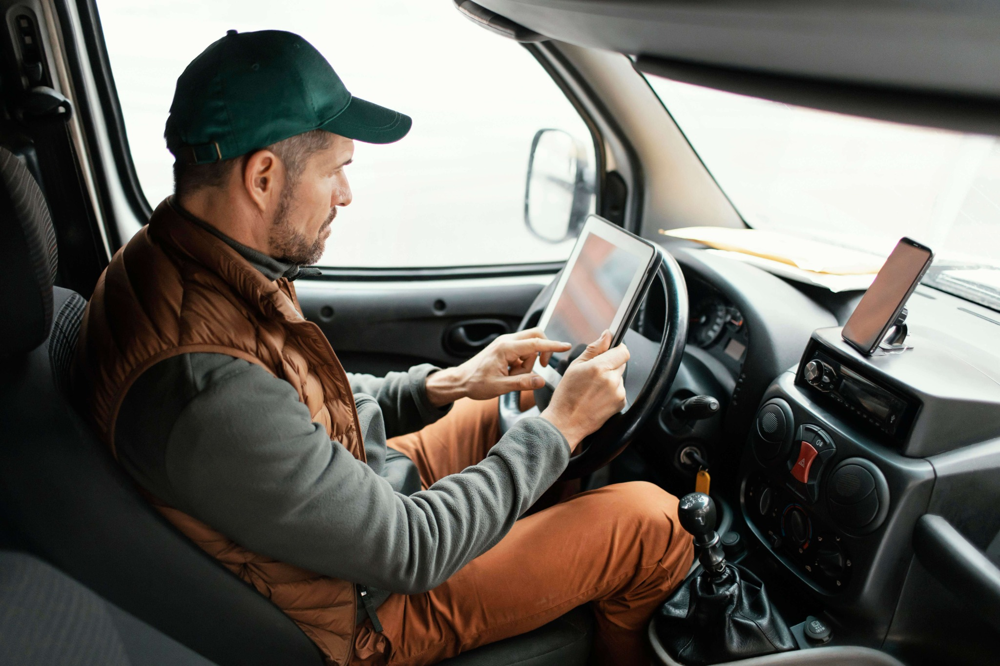
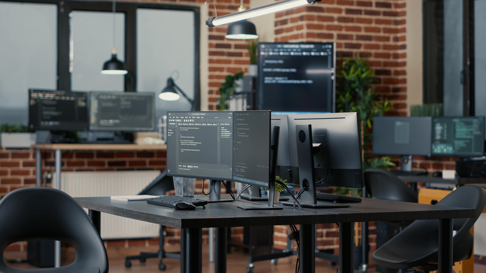

Desarrollo de software
Diseñamos y construimos aplicaciones y herramientas digitales alineadas con los procesos y necesidades de cada organización.
Somos una empresa de desarrollo de software enfocada en crear, integrar y evolucionar soluciones para el transporte y la logística. Combinamos tecnología, telemetría y conocimiento operativo para conectar los datos de los vehículos con las necesidades reales de las empresas.


INGENIERÍA · DESARROLLO · INNOVACIÓNGmapService nació en 2017 con el propósito de aportar soluciones tecnológicas a los retos de la movilidad, el transporte y la logística. Desde entonces hemos enfocado nuestro trabajo en la telemetría vehicular, la geolocalización y el desarrollo de herramientas que facilitan el seguimiento y la gestión de las operaciones.
A lo largo de estos años hemos fortalecido nuestra experiencia conectando dispositivos GPS, aprovechando sus datos y construyendo soluciones de software que ayudan a las empresas a tener mayor visibilidad y control sobre sus procesos.
Entendemos que la tecnología debe adaptarse a la realidad de cada operación. Por eso trabajamos en desarrollo a la medida e integración con diferentes plataformas y proveedores, buscando que la información sea útil, accesible y esté conectada con las decisiones del día a día.
Integramos diferentes capacidades para acompañar a las empresas en la transformación y digitalización de sus operaciones.
Diseñamos y construimos aplicaciones y herramientas digitales alineadas con los procesos y necesidades de cada organización.
Conectamos dispositivos y plataformas GPS para consultar posiciones, recorridos, eventos y variables de telemetría disponibles.
Articulamos datos de distintos proveedores y servicios para que la información pueda fluir entre plataformas.
Desarrollamos e impulsamos soluciones que trabajan en conjunto para llevar la información desde los dispositivos hasta la gestión del transporte.

La empresa que desarrolla, integra y acompaña las soluciones tecnológicas.
La plataforma para visualizar vehículos, activos y datos transmitidos por dispositivos compatibles.

El software para organizar y administrar procesos operativos y administrativos de transporte.
Cuéntanos qué necesita tu empresa. Podemos ayudarte a explorar soluciones de software, telemetría e integración tecnológica.